Human Anatomy · 6111
Module 5 — Knee, Lower Leg, Ankle & Foot — Neuromuscular System
Topics: 5.1 Musculature of the Knee • 5.2 Lower Leg: Anterior & Lateral Compartments • 5.3 Posterior Compartment • 5.4 Muscles of the Foot
📖 How to Use These Notes
- Best used with the lecture playing — keep these open, follow along, and add your own notes as you watch
- Lecture banners mark the start of each topic and run in the same order as the videos
- 🎙 Callouts = direct insights from the instructor's transcript
- ★ Tips = exam-relevant content or things the instructor told you to prepare
- Figures are taken directly from the module's slide decks
- Each topic ends with its own Quick-Reference Glossary
- Written from last year's recordings — if a lecture has been re-recorded or resequenced, Canvas wins
- Watch Dr. Litmer's lecture videos in your own Canvas module — links are cohort-specific
- Exam 1 covers Modules 1–5: 50 questions, Respondus LockDown Browser + webcam
- Module 4 gave you the passive restraints; this module adds the ACTIVE system — the muscles, nerves, and vessels that stabilize and move the lower leg
- Both palpation skills lists (knee + ankle/foot) live in this Drive folder — your body is the teacher
TOPIC 5.1
Musculature of the Knee — Function + Neurovasculature
Origins and insertions were covered with the thigh; this topic is about ACTION and neurovasculature. Knee = hinge joint, medial-lateral axis → flexion/extension in the sagittal plane (flexion moves posteriorly thanks to embryological torsion).
| Group | Muscles | Innervation |
|---|---|---|
| Extensors — quadriceps femoris | Rectus femoris (superficial, central) · vastus lateralis · vastus intermedius (deep to RF) · vastus medialis | Femoral nerve — posterior division of anterior rami, L2–L4; myotome anchor: knee extension ≈ L3–L4 |
| Flexors — hamstrings + helper | Biceps femoris (lateral) · semimembranosus + semitendinosus (medial) · sartorius assists (wraps posterior, inserts anterior → flexion moment) | Split BF innervation: short head = COMMON FIBULAR division of sciatic (posterior divisions); long head + both semis = TIBIAL division (anterior divisions); hamstrings myotome ≈ L5–S1 |
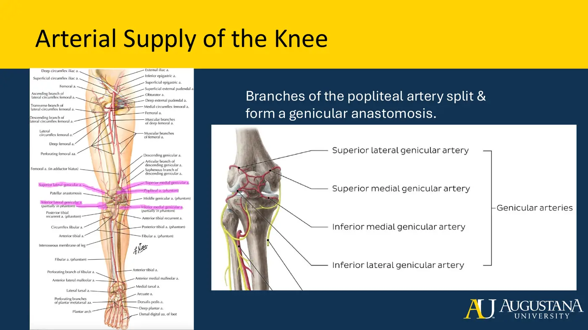
- The genicular anastomosis is the exam point: a cross-connection ringing the knee, so if one artery is compromised the others keep the joint perfused.
Topic 5.1 — Quick-Reference Glossary
| Term | Definition |
|---|---|
| Quads innervation | Femoral n., posterior division, L2–L4 |
| BF split | Short head = common fibular division · long head = tibial division of sciatic |
| Femoral → popliteal | The name change happens at the adductor hiatus |
| Genicular anastomosis | 2 medial + 2 lateral (sup + inf) — redundancy for knee perfusion |
| Myotome anchors | Knee extension L3–L4 · hamstrings L5–S1 |
TOPIC 5.2
Lower Leg: Anterior & Lateral Compartments
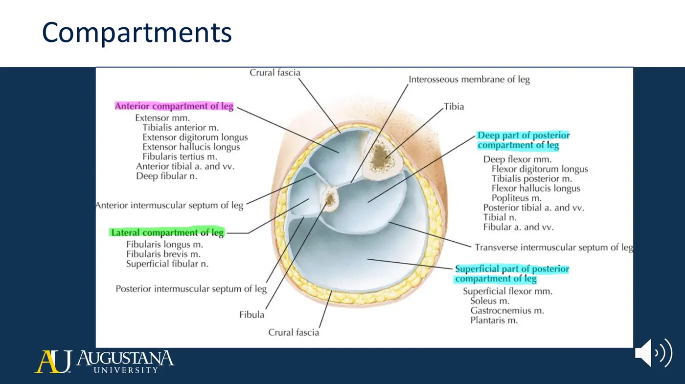
- Fascial septa build the compartments: the anterior compartment is bounded by the tibia medially, interosseous membrane posteriorly, anterior intermuscular septum laterally. Weakness in a movement pattern → which compartment → which nerve. That's the logic of this whole module.
1. Anterior Compartment — the Dorsiflexors (all DEEP FIBULAR n., anterior tibial a.)
| Muscle | Origin → Insertion | Actions |
|---|---|---|
| Tibialis anterior | Lateral surface of tibia + IOM → medial cuneiform + base of MT1 | DF + INVERSION — the prime dorsiflexor (one joint, biggest bulk) |
| Extensor digitorum longus | Proximal half of medial fibula + IOM + lateral tibial condyle → middle + distal phalanges 2–5 | Toe extension + DF + eversion |
| Extensor hallucis longus | Middle third of medial fibula + IOM → base of distal phalanx, great toe | 1st MTP/IP extension + DF |
| Fibularis (peroneus) tertius | Distal third of medial fibula + IOM + septum → base of MT5 | DF + eversion |
- Extensor retinacula — superior (fibula→tibia, proximal to the malleoli) and the Y-shaped inferior — bind the tendons so dorsiflexion doesn't bowstring them away from the ankle.
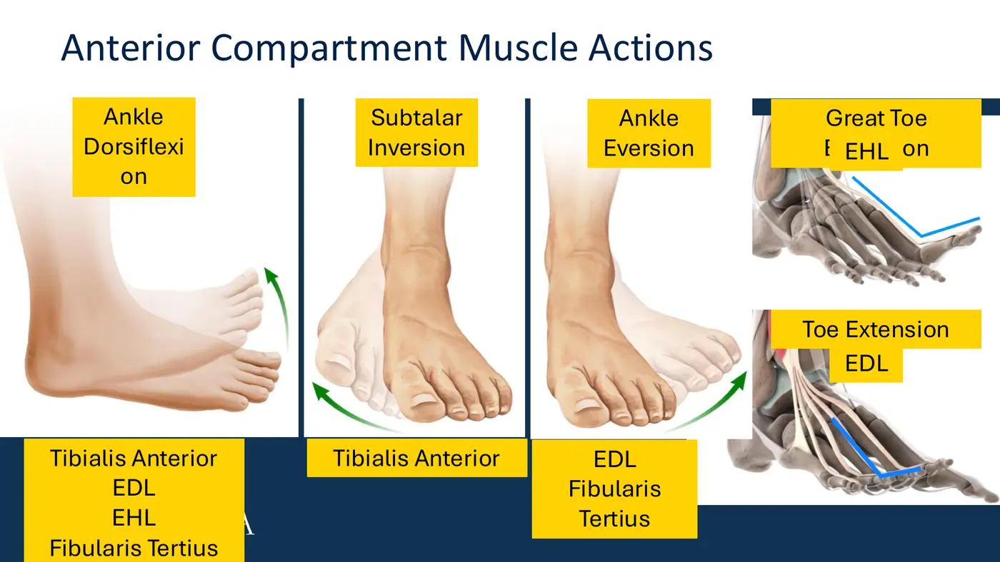
2. Lateral Compartment — the Evertors (SUPERFICIAL FIBULAR n., perforating branches of fibular a.)
| Muscle | Origin → Insertion | Actions |
|---|---|---|
| Fibularis longus | Fibular head + proximal 2/3 lateral fibula → crosses UNDER the sole lateral→medial → medial cuneiform + base MT1 | PF + eversion — and its sling under the foot supports the longitudinal + transverse arches. Mirror-image insertion of tibialis anterior: together a stirrup |
| Fibularis brevis | Distal 2/3 lateral fibula → tuberosity of MT5 | PF + eversion (behind the lateral malleolus → plantar-side line of pull) |
- Superior + inferior fibular retinacula (lateral malleolus ↔ calcaneus) stop these tendons slipping over the lateral malleolus.
3. The Fibular Nerves + Foot Drop
- Common fibular nerve = terminal sciatic branch (posterior divisions). Splits from the tibial nerve near the apex of the popliteal fossa, runs medial to the biceps tendon and lateral to the lateral gastroc head, then wraps the fibular neck — superficial, minimally padded, the most commonly injured nerve of the lower limb — and divides beneath fibularis longus into deep + superficial.
| Deep fibular nerve | Superficial fibular nerve |
|---|---|
| Runs on the IOM's anterior surface WITH the anterior tibial artery | Descends inside the lateral compartment, then pierces the fascia |
| Motor: ALL FOUR anterior-compartment muscles | Motor: fibularis longus + brevis |
| Sensory: ONLY the triangular first web space — the tell-tale patch for deep-fibular compression | Sensory: anterolateral leg + dorsum of the foot — EXCEPT the first web space (deep fibular) and the lateral border (sural) |
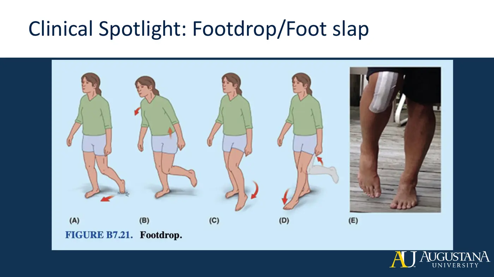
4. Vessels
- Popliteal artery → anterior tibial (pierces the IOM, descends with the deep fibular nerve, dives under the extensor retinacula → becomes dorsalis pedis) and posterior tibial (next topic) which gives the fibular artery — whose perforating branches feed the lateral compartment. Venous drainage mirrors it: anterior tibial + fibular veins → popliteal → femoral.
Topic 5.2 — Quick-Reference Glossary
| Term | Definition |
|---|---|
| Anterior 4 | Tib ant · EDL · EHL · fibularis tertius — all deep fibular n. |
| Lateral 2 | Fibularis longus + brevis — superficial fibular n. |
| Prime dorsiflexor | Tibialis anterior |
| Stirrup pair | Tib ant + fibularis longus share the medial-cuneiform/MT1 insertion |
| First web space | Deep fibular nerve's only sensory turf |
| Fibular neck | Where the common fibular nerve gets hurt → foot drop |
| Retinacula job | Anti-bowstringing |
| Anterior tibial a. | Through the IOM → dorsalis pedis |
TOPIC 5.3
Posterior Compartment — the Propulsion Machine
The posterior compartment carries most of the lower leg's muscle bulk because it powers push-off. The transverse intermuscular septum splits it into superficial and deep; the posterior intermuscular septum walls it off from the lateral compartment; crural fascia wraps the whole thing.
1. Superficial Three → the Achilles (all TIBIAL n.)
| Muscle | Origin → Insertion | Notes |
|---|---|---|
| Gastrocnemius | Lateral head: posterolateral surface of lateral femoral condyle · medial head: posterior medial condyle + popliteal surface of femur → Achilles → posterior calcaneus | Two-joint: PF + knee flexion |
| Soleus | Soleal line + medial tibia + fibular head/posterior fibula → Achilles | One-joint PF workhorse |
| Plantaris | Lateral supracondylar line + oblique popliteal ligament → posterior calcaneus, medial to and separate from the Achilles | Weak, vestigial; crosses both joints |
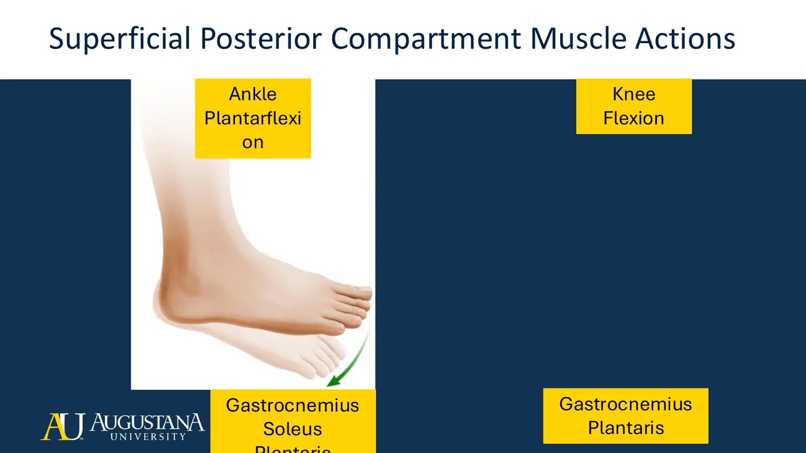
🦵 The knee-position rule (test favorite)
- Knee EXTENDED → gastrocnemius + plantaris join soleus in plantarflexion
- Knee FLEXED → gastroc is slackened at one end — the SOLEUS does the plantarflexing
- That's also why the palpation skills list has you test soleus with the knee bent — it isolates it
- Bursae: subtendinous calcaneal (bone↔tendon — its inflammation = calcaneal bursitis: posterior heel pain in long-distance runners, basketball, tennis) and subcutaneous calcaneal (tendon↔skin — the "pump bump" territory). Achilles rupture gets its full treatment in MSK2.
2. Deep Four (all TIBIAL n., posterior tibial a.)
| Muscle | Origin → Insertion | Actions |
|---|---|---|
| Tibialis posterior | Posterior tibia + IOM + posterior fibula → navicular tuberosity, all cuneiforms, cuboid, bases MT2–4 | PF + INVERSION + medial-longitudinal-arch support — the broadest insertion in the leg |
| Flexor digitorum longus | Posterior tibia only → distal phalanges 2–5 | Toe flexion + PF + inversion |
| Flexor hallucis longus | Distal 2/3 posterior FIBULA + IOM + septum → distal phalanx of the great toe | Great-toe flexion + PF + inversion (the lateral-origin/medial-toe crossover) |
| Popliteus | Lateral femoral condyle + posterior horn of the LATERAL MENISCUS → posterior proximal tibia | Unlocks the knee: open chain = tibial IR; closed chain = femoral ER at the start of flexion. Posterolateral-corner member resisting excess tibial ER. Fed by the two INFERIOR genicular arteries |
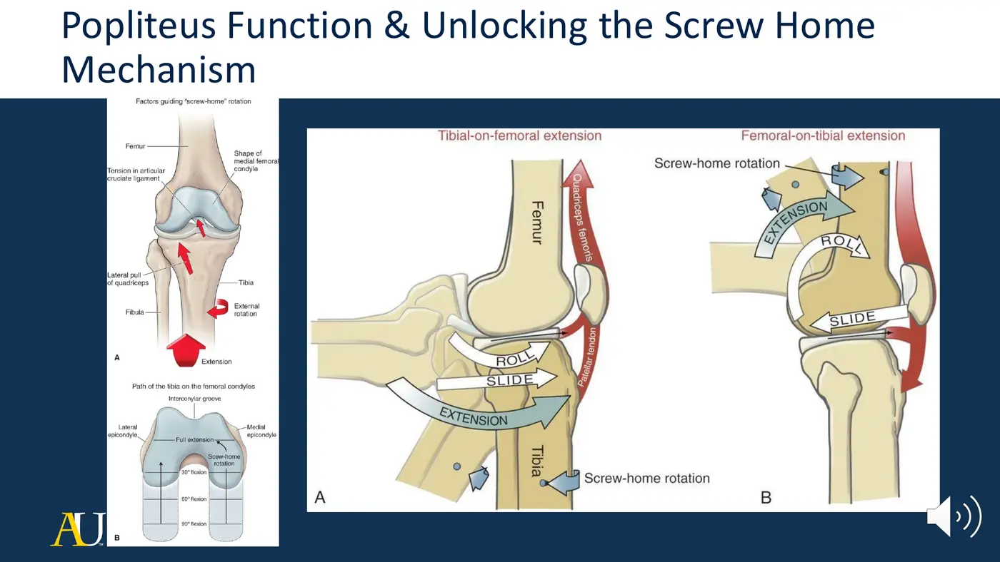
3. Tom, Dick (and Harry) + the Tarsal Tunnel
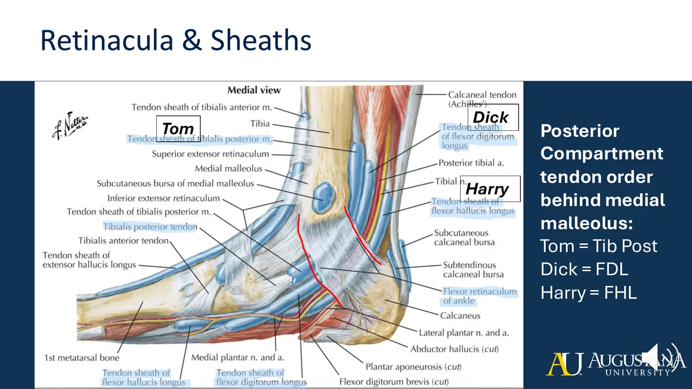
- Compression under that flexor retinaculum = tarsal tunnel syndrome: tibial-nerve entrapment → pain and numbness radiating into the plantar foot. It's the SECONDARY hypothesis in the sync's Carol case.
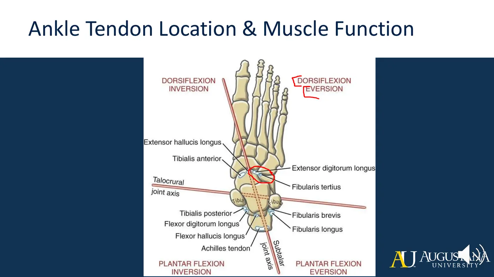
4. Tibial Nerve + Vessels
- Tibial nerve (sciatic's anterior divisions): splits in the distal thigh, descends through the popliteal fossa lateral to the popliteal vessels, passes between the gastroc heads and under the soleal tendinous arch, rides the tibialis posterior, and exits behind the medial malleolus through the tarsal tunnel → bifurcates into the plantar nerves. Along the way: muscular + articular branches, a contribution to the sural nerve (with the common fibular), the medial calcaneal branch.
- Posterior tibial artery: from the popliteal, courses popliteus→medial malleolus giving multiple branches — most importantly the fibular artery — then divides into medial + lateral plantar arteries in the foot. Veins mirror arteries: posterior tibial + fibular → popliteal. The great saphenous vein runs superficial and medial.
Topic 5.3 — Quick-Reference Glossary
| Term | Definition |
|---|---|
| Triceps surae | 2 gastroc heads + soleus → Achilles (strongest tendon in the body) |
| Knee-position rule | Knee straight: gastroc helps PF · knee bent: soleus alone |
| Tom, Dick, and Harry | Tib post · FDL · (a/v/n) · FHL behind the medial malleolus |
| Tarsal tunnel | Tibial-nerve entrapment under the flexor retinaculum → plantar symptoms |
| Popliteus | The knee-unlocker (open chain tibial IR / closed chain femoral ER) |
| Tibial n. course | Lateral to popliteal vessels → between gastroc heads → under soleal arch |
| Great saphenous | The superficial medial vein you can see |
| DVT | Pooling + clot after surgery/immobility — screen for it |
TOPIC 5.4
Muscles of the Foot — Layers, Nerves, and the Foot Core
1. Dorsal Two (deep fibular n., anterior tibial a.)
- Extensor digitorum brevis — superolateral calcaneus → the EDL tendons of toes 2–4, creating a pulley for reciprocal DIP extension. Extensor hallucis brevis — superolateral calcaneus → proximal phalanx of the great toe → 1st MTP extension.
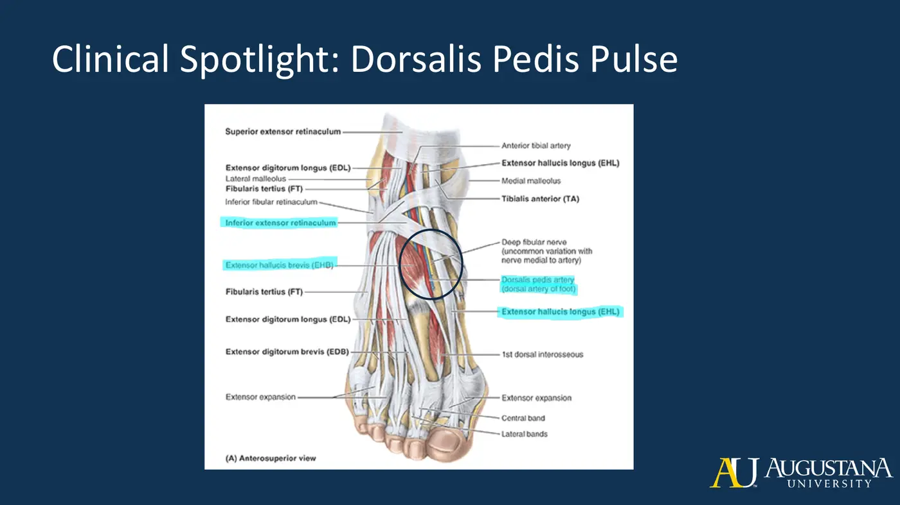
2. Plantar Layers — the 3-2-3-2 Stack
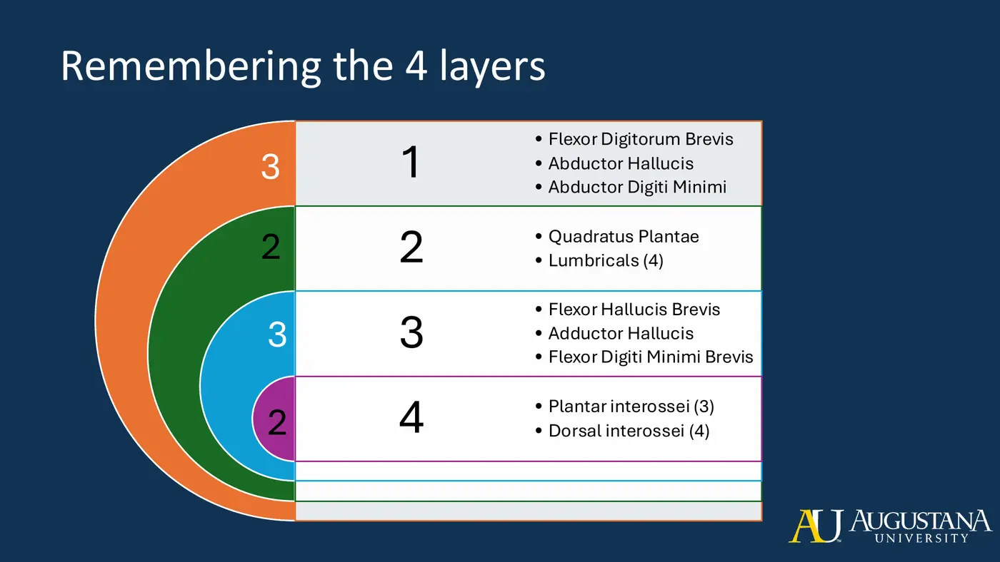
| Layer | Muscle | Origin → Insertion | Action + Nerve |
|---|---|---|---|
| 1 | Flexor digitorum brevis | Medial calcaneal tuberosity + plantar aponeurosis → middle phalanges 2–5 | Toe flexion · MEDIAL plantar n. |
| 1 | Abductor hallucis | Medial calcaneal process + flexor retinaculum + aponeurosis → MEDIAL base of proximal phalanx 1 | Abducts the hallux · medial plantar n. |
| 1 | Abductor digiti minimi | Calcaneal tuberosity + aponeurosis → LATERAL base of proximal phalanx 5 (+MT5) | Abducts + flexes toe 5 · LATERAL plantar n. |
| 2 | Quadratus plantae | Two heads off the calcaneus → the FDL TENDONS | Straightens FDL's oblique pull + toe flexion · lateral plantar n. |
| 2 | Lumbricals ×4 | FROM the FDL tendons → proximal phalanges + extensor expansions 2–5 | MTP flexion + IP EXTENSION (via the expansions) · 1st = medial, lateral three = lateral plantar n. |
| 3 | Flexor hallucis brevis | Tib-post tendon + cuboid + lateral cuneiform (+ medial cuneiform per lecture) → SPLITS to both sides of proximal phalanx 1 | 1st MTP flexion (two-sided insertion = pure flexion) · medial plantar n. |
| 3 | Adductor hallucis | Oblique head: bases MT2–4 + cuboid + lat. cuneiform · transverse head: plantar MTP ligaments 3–5 → lateral base of proximal phalanx 1 | ADDucts the hallux · lateral plantar n. · transverse head = the TRANSVERSE ARCH's main muscular support |
| 3 | Flexor digiti minimi brevis | Base MT5 + long plantar ligament → base proximal phalanx 5 | 5th MTP flexion · lateral plantar n. |
| 4 | Plantar interossei ×3 (PAD) | Medial aspects of MT3–5 → medial bases + expansions 3–5 | ADDuct toward toe 2 + MTP flex + IP extend · lateral plantar n. |
| 4 | Dorsal interossei ×4 (DAB) | Opposing sides of the metatarsals → proximal phalanges + expansions | ABduct from the 2nd-ray midline (toe 2 goes both ways) + MTP flex + IP extend · lateral plantar n. |
3. Plantar Nerves + Arteries
| Medial plantar nerve (the larger) | Lateral plantar nerve |
|---|---|
| Runs under abductor hallucis; proper digital nerve to the hallux + three common plantar nerves | Crosses the sole between FDB and quadratus plantae → superficial + deep branches |
| Motor = LAFF: 1st Lumbrical, Abductor hallucis, Flexor digitorum brevis, Flexor hallucis brevis | Motor: EVERYTHING ELSE — QP, ADM, FDMB, adductor hallucis, all interossei, lateral 3 lumbricals |
| Sensory: anterior 2/3 of the medial sole + medial 3½ digits | Sensory: lateral sole + lateral 1½ digits |
- Arteries: posterior tibial → medial + lateral plantar arteries. The deep plantar arch = lateral plantar a. + the deep plantar branch of dorsalis pedis; the superficial arch = lateral plantar + the superficial branch of the medial plantar. So the dorsal and plantar supplies anastomose — same redundancy story as the knee.
4. Group Actions, Arches, and the Foot Core
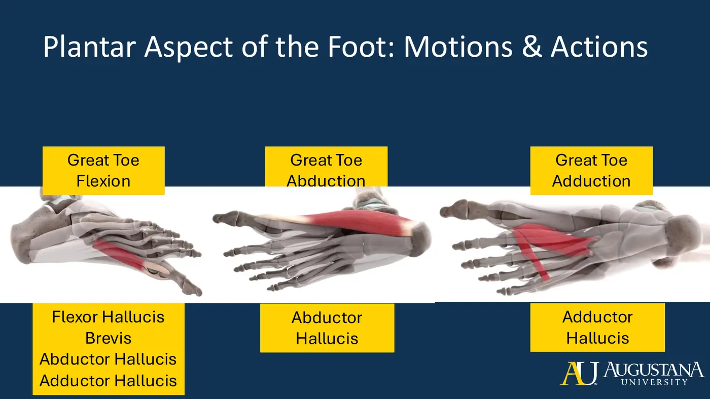
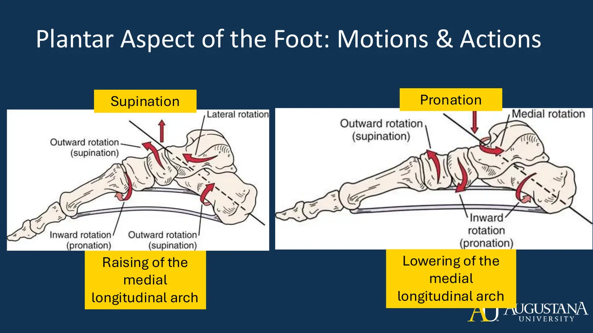
- Arch support: the intrinsic flexor layers sling under the longitudinal arch; the transverse arch leans on adductor hallucis' transverse head. And the foot core = passive structures (bones, capsules, ligaments, plantar fascia) + intrinsic 4 layers (dome + arch-height control) + extrinsic leg muscles crossing the ankle + the neural feedback loop — regional interdependence means proximal weakness shows up in the foot.
🔗 Required resources — dissections, mechanism videos, KenHub anchors
- SSF dissection: anterior lower leg — superficial (watch 1:56+)
- SSF dissection: anterior lower leg — deep
- SSF dissection: posterior lower leg — superficial (2:21+)
- SSF dissection: posterior lower leg — deep (3:20+)
- SSF dissection: plantar foot (16 min)
- Screw Home Mechanism (6 min)
- KenHub: muscles of the anterior & lateral leg (study unit)
- KenHub: muscles of the foot (study unit)
- KenHub: common fibular nerve
- KenHub: tibial nerve
- KenHub: medial plantar nerve
- KenHub: arteries of the leg & foot
Netter plates: 5.1 → 509–511, 515 · 5.2 → 524, 526, 530–532, 534 · 5.3 → 527–529, 534 · 5.4 → 541, 543–547. Per-muscle KenHub articles are linked on each Canvas topic page.
Topic 5.4 — Quick-Reference Glossary
| Term | Definition |
|---|---|
| 3-2-3-2 | The plantar layer stack, superficial → deep |
| Foot midline | The SECOND ray — ab/adduction reference |
| PAD / DAB | Plantar ADduct · Dorsal ABduct (2nd toe abducts both ways) |
| LAFF | Medial plantar motor list: 1st Lumbrical, AbH, FDB, FHB |
| Lumbrical trick | Origin on FDL TENDONS; MTP flex + IP extend via extensor expansions |
| Quadratus plantae | Straightens FDL's pull — lateral plantar n. |
| Transverse-arch muscle | Adductor hallucis, transverse head |
| Deep plantar arch | Lateral plantar a. + deep branch of dorsalis pedis |
| Foot core | Passive + intrinsic + extrinsic + neural subsystems |
SYNC SESSION 5 + SKILLS
Cross-Sections, the Carol Case, Nerve Differentiation, Palpation
1. The Carol Case (the module's reasoning template)
| Case data | Finding |
|---|---|
| Who | 62-year-old teacher/coach; right medial lower-leg pain after a hiking weekend (pushed through 10 more miles) |
| Exam | 5/5 dorsiflexion · WEAK + painful plantarflexion and toe flexion · tender distal 1/3 of medial tibia + posterior to the medial malleolus · painful heel raise · numbness/tingling in the plantar foot · DTRs 2+ and symmetric · gait: shortened stride, LACKS TERMINAL STANCE |
| Reasoning frame | Structures UNDER the symptoms (joints/bones; muscles/tendons/soft tissue) + structures that REFER in (saphenous n., tibial n. branches) |
| Hypotheses | Primary: posterior tibial tendinopathy · Secondary: tarsal tunnel syndrome · Tertiary: medial tibial stress syndrome |
2. Nerve-Differentiation Drills (breakout material — know these cold)
- Sciatic vs tibial entrapment: sciatic takes BOTH divisions down (hamstrings + everything below the knee); isolated tibial spares the fibular-innervated dorsiflexors/evertors and the anterolateral sensory turf. Superficial vs deep fibular: both evertors weak + dorsum-of-foot numbness = superficial; dorsiflexors weak + first-web-space numbness = deep. Medial vs lateral plantar: LAFF muscles + medial 3½ digits = medial; the rest of the intrinsics + lateral 1½ digits = lateral.
- EHL palpation Menti answers: medial neighbor = tibialis anterior tendon · lateral = extensor hallucis brevis · proximal = inferior extensor retinaculum · distal = 1st MTP + phalanx. Terminal stance → pre-swing sequence = dorsiflexion → neutral → plantarflexion.
3. Palpation Skills Lists (both docs in this Drive folder — click-to-video)
| Region | Highlights (cue that makes it work) |
|---|---|
| Knee — bony | Patella → tibial tuberosity (flex the knee to tighten the tendon) · medial/lateral joint lines (flex 90°, find the sulcus) · adductor tubercle · pes anserine (just inferior to the medial joint line) · fibular head (confirm with passive DF/PF) |
| Knee — soft | Patellar fat pad (horseshoe below the patella) · patellar tendon (on stretch in flexion) · MCL (condyle↔plateau, meniscal attachment) · LCL (figure-4: cross the leg, knee 90° — condyle↔fibular head) · TFL→ITB to Gerdy's tubercle (resist side-lying abduction) · popliteal fossa (tension, cysts) |
| Ankle/foot — bony | Talus (between the malleoli; DF/PF to feel it glide) · navicular (invert/evert to find the talonavicular gap) · cuneiforms proximal to MT1–3 · MT5 tuberosity (step-off) → cuboid just proximal · calcaneus borders |
| Ankle/foot — soft + pulses | Tib ant (resisted DF+inversion) · EDL/EHL (resisted toe extension) · dorsalis pedis pulse (lateral to EHL) · gastroc (resisted PF) · soleus (resisted PF with the knee FLEXED) · tib post tendon (behind the medial malleolus, resisted PF+inversion) · posterior tibial pulse (a finger-width superior, malleolus↔Achilles) · deltoid ligament (slight eversion) · fibularis longus (resisted eversion in PF) · plantar fascia (toes extended) |
Study strategy from office hours: work from the module objectives, switch Gradebook to the Learning Mastery view (performance by Bloom's level, content area, module, objective), start with recall/ID, then write your own analysis-level questions with your study group.